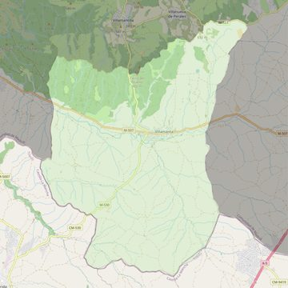

Santa Catalina de Alejandría
- Arciprestazgo
- Navalcarnero
- Población
- Villamanta
- Dirección postal
- Pza. Constitución, 2
- Código postal
- 28610
- Extensión
- 63,32 km² (6.332 ha)
- Teléfono
- 624 124 968
- Correo electrónico
- santacatalina-villamanta@diocesisgetafe.es
- Información demográfica
- De la parroquia · De la población (Villamanta) · Del arciprestazgo (Navalcarnero)


Descargar mapaLímites según decreto
Los del término municipal